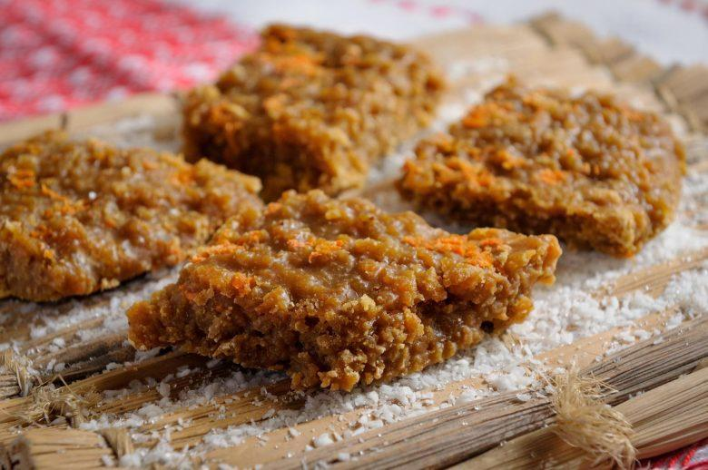

Cocada com rapadura
Essa receita é uma ótima opção para quando você está com aquela vontade de comer um docinho após o almoço
Ingredientes
- 2 1/2 xícaras (chá) de leite
- 200 g de rapadura picada (comprada pronta)
- 300 g de coco fresco ou seco ralado
Modo de preparo
- Em uma panela, misture o leite e a rapadura picada.
- Leve ao fogo baixo, mexendo até soltar do fundo da panela e após derreter a rapadura, adicione o coco.
- Depois de um tempo, quando a cocada já estiver mais pastosa, desligue o fogo e deixe esfriar um pouco na panela.
- Transfira para uma compoteira e, se desejar, decore com fitas de coco fresco antes de servir.
- Conserve por até 20 dias na geladeira.
Essa receita possui o rendimento de 8 porções

imagem meramente ilustrativa